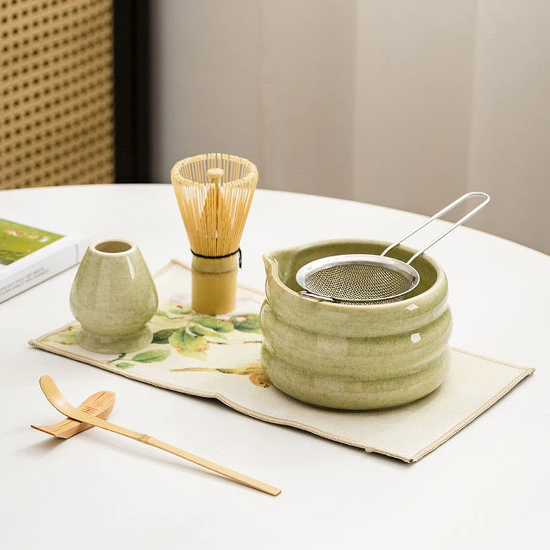
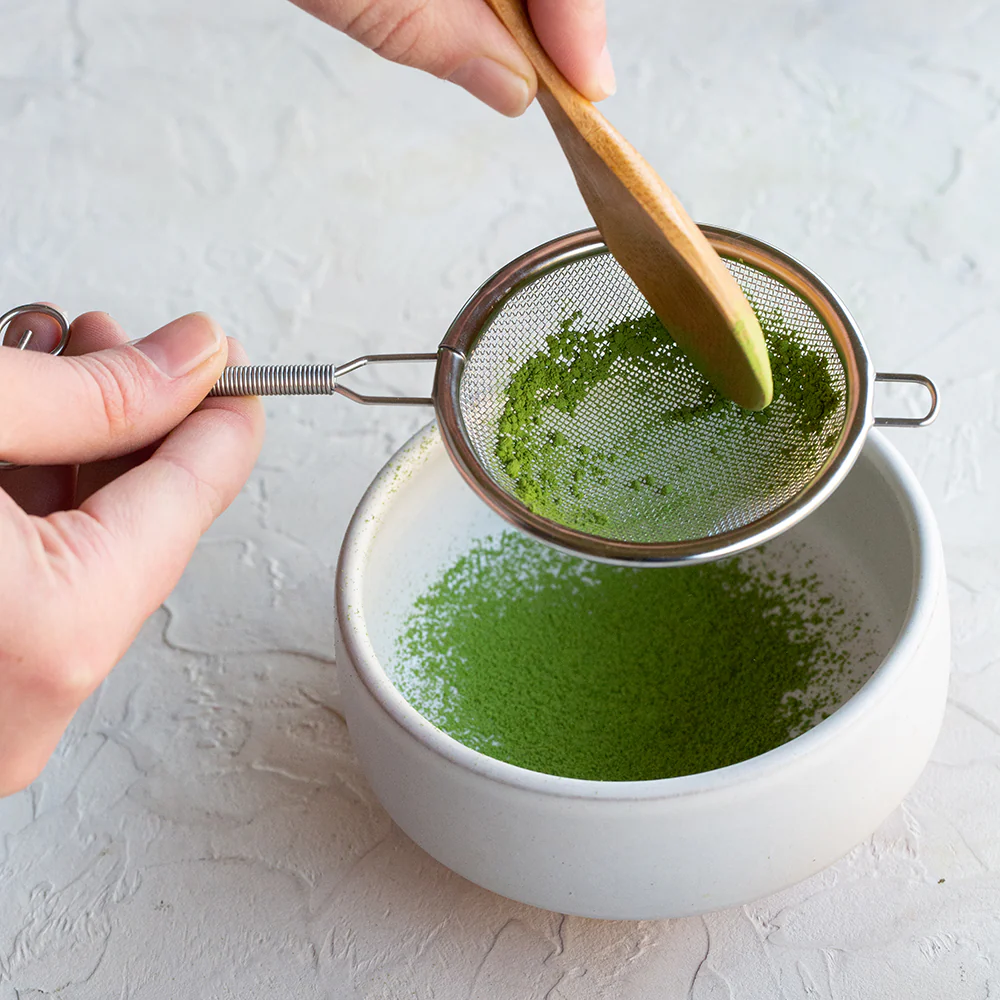
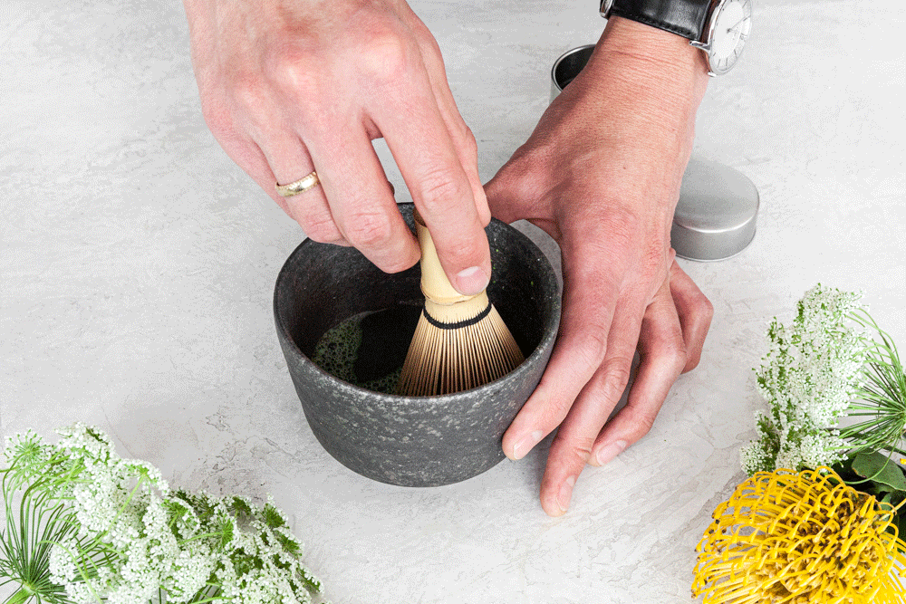

Make Your Own

Prepare materials
Gather your chawan (bowl), chasen (whisk), matcha powder, teaspoon, and sifter. Soak your chasen (whisk) in hot water to prepare the bristles for whisking.

Sift & add water
Sift 2 teaspoons (~4 grams) of matcha powder through the tea sift into a bowl. This will remove clumps and ensure a smooth texture. Then, pour about 2 oz of hot water (not boiling, around 160–175°F) over the powder.

Whisk
Use a bamboo whisk (chasen) to whisk briskly in a “W” motion. For the best microfoam, try the 30-20-10 method: 30 seconds whisking along the bottom of the bowl, 20 seconds in the middle of the liquid, and 10 seconds gently at the surface.

Enjoy
Drink as is for a traditional matcha experience, or add more hot water for a matcha tea or milk for a matcha latte. You can also pour your matcha over ice!